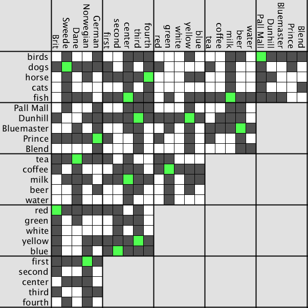

A very interesting puzzle about graphs (the mathematical kind). Given a
complicated network you must find your way across paying only one fare.
Solutions inside.
 Grandpa's Transit Map.
Grandpa's Transit Map.
A very interesting puzzle about graphs (the mathematical kind). Given a
complicated network you must find your way across paying only one fare.
Solutions inside.
 The Dollar Game.
The Dollar Game.
A Javascript version of The Dollar Game, playable on the browser,
as seen on this Numberphile video
made With p5.js.
Left-click nodes to give one unit to each one of its connected nodes.
Right or middle click to take one unit from each connected node.
Can You eliminate all negative numbers from the graph?
 The Castle and the Princess Puzzle.
The Castle and the Princess Puzzle.
A Javascript implementation of the puzzle described by Matt Parker on this video.
Made With p5.js
Left-click squares to select a door to check that night.
lines indicate all possible paths the princess could have taken given your strategy.
What is the fastest guaranteed way to find the princess?
 Free the Clones.
Free the Clones.
A Javascript implementation of "Pebbling a chessboard or Freeing the Clones",
as seen on This Numberphile video
made With p5.js
.
Left-click the checkers pieces to clone them up and to the right.
Can you free all three original pieces from their original spots on the corner?

Logic Grid puzzler
An interface for solving Logic Grid Puzzles. Some autmation capability has been implemented,
that of marking the remainder of the column and row as 'false' when a 'true' is marked,
and that of commuting 'false' values across to any other cells where they indirectly apply.
In the example seen here I have loaded the famous "Einstein's Puzzle" or "Zebra Puzzle".
 The Chaos Game
The Chaos Game
Some animations and stills from various variations on the Chaos Game.
In the animations,
the value that changes over time is the interpolation rate.
In the 3-achor case, interpolation at halfway (0.5) yields the proper sierpinski triangle,
for other numbers this value gets progrssively higher.
{kind=link}